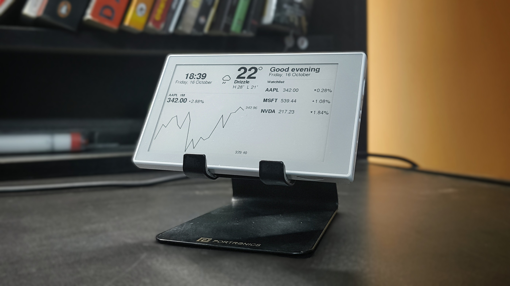
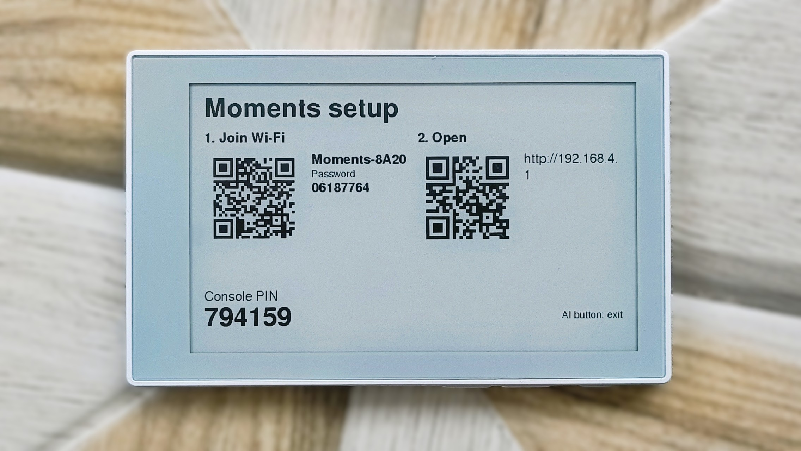
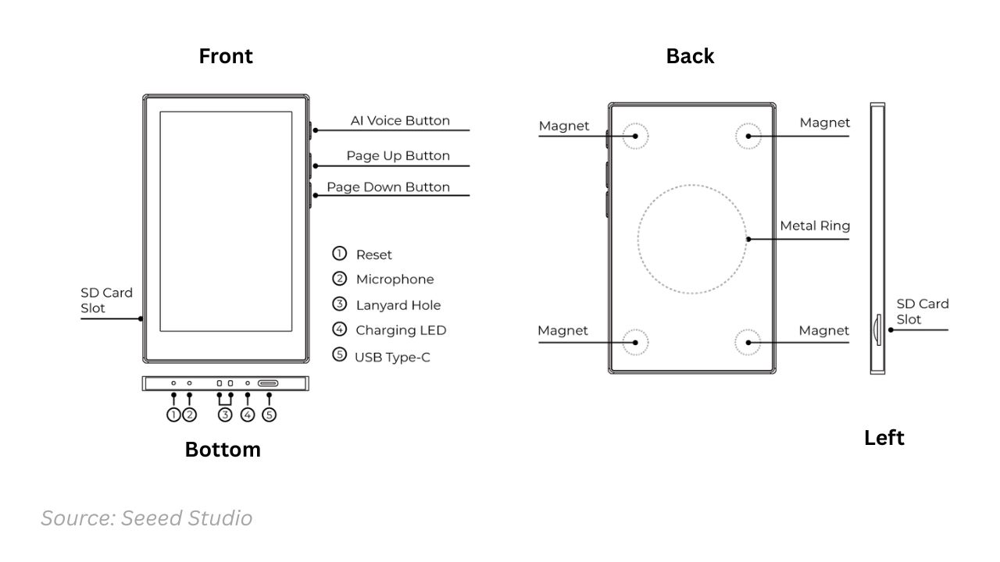
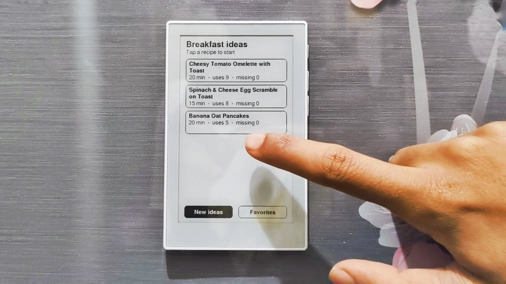
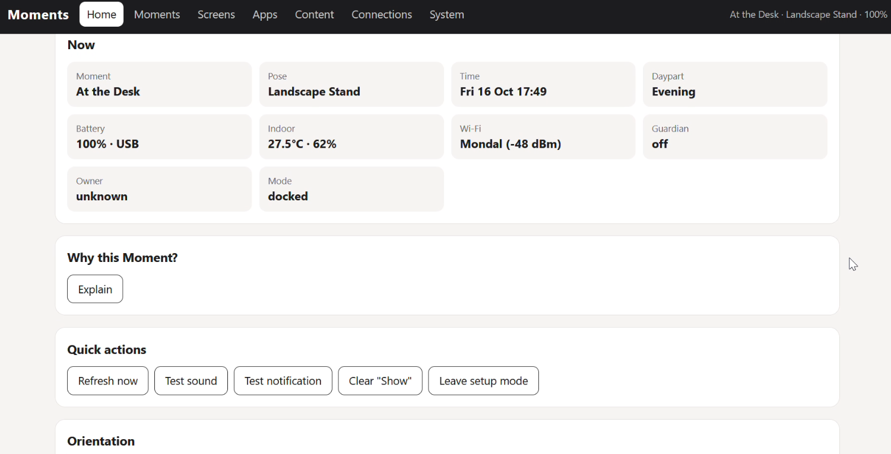

Moments
Free, open firmware for the Seeed reTerminal Sticky. Put it on your desk, your bedside or your fridge, and it shows what fits that place and time of day. Everything runs on the device. No cloud, no subscription.

1. Install
Install straight from this page. You need Chrome or Edge on a computer (Web Serial) and a USB-C data cable.
- Plug the Sticky into your computer. USB power turns it on.
- Click Install Moments and pick the serial port (usually "USB Single Serial" or "CH343").
- When asked to erase the device:
- First install: tick it.
- Updating Moments: leave it unticked. Your settings, Wi-Fi and photos are kept.
- Wait for it to finish. The Sticky restarts and shows the Moments setup screen.
Version 1.0.0. No port shown on Windows? Install the WCH CH343 driver and try again.
You can also update without a cable. Open the console, go to System › Firmware, and upload moments.bin. Your settings are kept.
2. First setup
On first start the screen shows two QR codes and a 6-digit PIN.

- Join the Sticky's Wi-Fi. Scan the first QR code, or connect to
Moments-XXXXwith the password shown. - Open the console. Scan the second QR code or go to
http://192.168.4.1. Enter the PIN from the screen. - Connections: add your home Wi-Fi, search for your city (location and time zone), and set your name and units. Click Save.
- Home › Orientation: calibrate once. Press Show step 1, hold the Sticky so the text reads upright, keep it still, and press Step 1. Then do the same for step 2.
- Press Leave setup mode. The Sticky joins your Wi-Fi and starts showing Moments.
3. How Moments works
A Moment is a rule: when (where the Sticky is placed, time of day, weekday, conditions) → what it shows or does. Where it is placed is read from the way it hangs or stands, so it needs no setup per place.
The four poses
| Pose | How | Default Moment |
|---|---|---|
| Portrait · Stand | On a 45° stand, tall | Bedside: Good Morning / Bedside / Wind Down (by time of day) |
| Landscape · Stand | On a 45° stand, wide | At the Desk (agenda, stocks, weather) |
| Portrait · Vertical | Stuck flat to a wall or fridge, tall | Kitchen (Chef app) |
| Landscape · Vertical | Stuck flat to a wall or door, wide | Get Ready (outfit + forecast) |
Upside down counts as the same pose, and the screen rotates to stay upright. Lying flat or held in the hand counts as no pose, so the screen stays as it is. A pose is accepted only once the Sticky is still for about a second.

Three kinds of Moments
- Screen Moment shows a screen of widgets (clock, weather, calendar, news, stocks, quotes…).
- App Moment opens an interactive app: Chef, Lists, Timer, Gallery or Guardian.
- Automation fires once on an event (time, temperature, humidity, battery, motion, owner leaves or arrives…) and sends a notification, plays a sound, or shows a screen for a few minutes.
Screen and App Moments are checked from top to bottom, and the first match wins. If nothing matches, the Glance screen is shown. Default dayparts: Morning 05–11, Day 11–17, Evening 17–21, Night 21–05. All of these can be changed.
4. Controls
Touch and buttons are for using the Sticky. All editing happens in the web console.
Buttons
| Button | What it does |
|---|---|
| AI press | Refresh now. In an app: back. In setup mode: leave setup mode. When off: power on. |
| AI hold 3 s | Setup mode: shows the console address, QR code and PIN. Hold again to leave. |
| AI hold 8 s | Power off. Press AI to turn it back on. |
| Up / Down | Previous / next screen. In apps: previous / next page or step. |
| Up + Down while powering on | Service screen (see below). |
Touch on screens
| Gesture | What it does |
|---|---|
| Tap | Refresh now. Tap the outfit suggestion to see another outfit. |
| Swipe | Browse your other screens of the same orientation. It goes back to the normal Moment after 10 minutes or when you move the Sticky to another pose. |
Apps
| App | On the device |
|---|---|
| Chef | Tap a recipe → see what you have and what's missing → Add missing to your shopping list, Save as favorite, or open the Steps. Swipe or Up/Down through steps; tap a step's timer to start it. New ideas asks the AI again; Favorites shows saved recipes. AI goes back. |
| Lists | Tap an item to tick it. Clear ticked removes done items. Swipe left/right to switch lists, Up/Down for more items. |
| Timer | Tap a preset to start a focus timer. Pause, Resume, Stop. Take a Break when it ends. The buzzer sounds when time is up. |
| Gallery | Tap, swipe or Up/Down for the next / previous photo. It changes on its own at the interval you set. |
| Guardian | No touch controls, by design. It disarms when your phone or tag is found, or from the console. |

Service screen
Hold Up + Down while turning the Sticky on (or while pressing the reset pinhole). It works without touch or Wi-Fi. Use Up/Down to choose and AI to run.
- Diagnostics: battery, temperature sensor, motion sensor, pose, clock, touch and storage. Touch the screen to test touch.
- Setup mode: opens the console.
- Orientation step 1 / 2: the same calibration as in the console.
- Buzzer test.
- Factory reset: press AI twice within 5 s. This erases all settings, data and keys.
5. The web console
All customization happens here. To open it:
- On battery: hold AI for 3 s. The screen shows the address and PIN. Setup mode closes after 10 minutes without use, or when you press AI.
- On USB power: the console is always reachable on your Wi-Fi.
Go to http://moments.local, or to the IP address shown on the screen if that doesn't load. Log in with the PIN from the screen.

| Page | What's there |
|---|---|
| Home | Live status (pose, active Moment, battery, sensors). Why this Moment? explains which rule matched. Quick actions: refresh, test sound, test notification, leave setup mode. Orientation calibration and recent events. |
| Moments | Screen and App Moments (order = priority), Automations (with a Test button) and Dayparts. A daypart can start at sunrise or sunset ± minutes. |
| Screens | Grid designer: 6×10 cells in portrait, 10×6 in landscape. Drag to move, drag the corner to resize, tap a widget for its settings. The preview is drawn by the device itself. Start from a template. |
| Apps | Chef (diet, allergies, servings, cook time), Timer presets, Gallery interval, Guardian (owner devices, arming poses, siren). |
| Content | Pantry, Wardrobe (for outfit ideas), Lists, Notes, Quotes and Images. Photos are resized and dithered in your browser before upload. |
| Connections | Wi-Fi (up to 3), location and time zone, profile and wake times, calendars (secret iCal/ICS link), news feeds, stocks (free Twelve Data key), AI (any OpenAI-compatible service; Groq's free tier is the default), ntfy or webhook notifications, owner devices. |
| System | Power profile (Eco / Balanced / Live), charge limit, display, sound and quiet hours, sensor offsets and pose tuning, touch mapping, firmware update, backup and restore, reboot and factory reset. |
6. Troubleshooting
| Problem | Fix |
|---|---|
| Installer finds no port | Use a data cable (not charge-only), install the CH343 driver, and close any other app using the port (such as the Arduino Serial Monitor). |
moments.local doesn't open | Use the IP address shown on the setup screen. Some networks and Android phones don't support .local. |
| Console doesn't load | On battery the console runs only in setup mode. Hold AI for 3 s first. |
| Pose never changes | Calibrate orientation (Home › Orientation). If it still won't settle, raise System › Sensors & poses › Stillness threshold a little. |
| Taps land in the wrong place | Change System › Touch mapping, then Save. |
| Ghosting after sleep | Turn off System › Display › Fast partial refresh after sleep, or lower "full clean refresh every N". |
| Photos look inverted | Turn on System › Display › Swap the two gray levels. |
| Room temperature reads high | The board warms itself, mostly while charging. Set a temperature offset in System. |
| Start over | Use the service screen › Factory reset, or reinstall with "erase" ticked. |